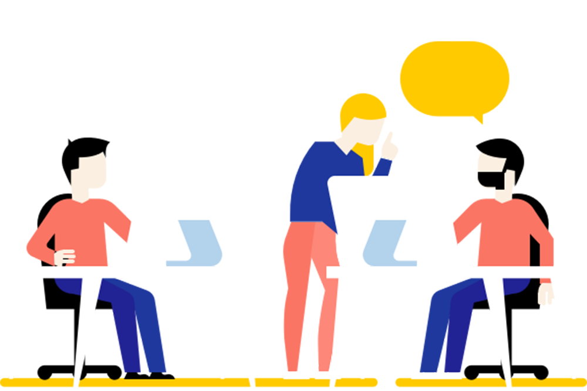

Melhore a comunicação com seu cliente e time
Consultoria especializada em startups, empresas, pessoas.
Ver demonstração

Consultoria especializada em startups, empresas, pessoas.
Ver demonstração
Sites responsivos são projetados para adaptar seu layout e conteúdo automaticamente ao tamanho da tela do dispositivo em que estão sendo visualizados.

Garanta que toda sua comunicação esteja alinhada com seu propósito, cada palavra conta, criação de sites e blogs personalizados.

Uma Landing Page (página de destino) é uma página dedicada a um único objetivo, como a conversão de visitantes em leads, vendas ou inscrições.
A Upsite Creative acredita que marcas fortes são construídas a partir de transformações importantes e positivas na vida dos consumidores. Exatamente como uma conversa que ganha forma, a ideia vira flâmula.
Comunicar bem, de forma coerente e clara não é algo fácil e estamos aqui para ajudar você e seu time. Você escolhe, remoto ou presencial, para seu cliente ou seu público interno, você determina como vamos te ajudar.

"A UpSite Creative transformou nossa presença online. O design do nosso novo site é não apenas bonito, mas também funcional e fácil de navegar. Eles entenderam nossas necessidades de forma impecável, criando uma plataforma de e-commerce que trouxe mais conversões e engajamento. A equipe foi extremamente profissional e criativa, entregando o projeto dentro do prazo e superando nossas expectativas. Altamente recomendados!"
João Almeida, CEO da TechSolutions
"O trabalho da UpSite Creative foi fundamental para dar uma identidade única à minha marca. O logotipo que criaram reflete perfeitamente os valores da minha empresa, e o site que desenvolveram ficou incrivelmente responsivo e intuitivo. Eles não apenas criaram uma solução digital, mas uma verdadeira experiência para meus clientes. Agradeço à equipe pelo excelente trabalho e dedicação!"
Maria Souza, Fundadora da M.S. Consultoria
"Quando decidimos atualizar nosso site, procuramos uma empresa que fosse capaz de combinar design criativo com tecnologia de ponta. A UpSite Creative fez isso e mais! Eles não só entregaram um site WordPress incrível, mas também garantiram que ele fosse otimizado para SEO, o que melhorou nosso ranqueamento nas buscas. Foi uma experiência fantástica trabalhar com uma equipe tão comprometida e inovadora. Certamente voltaremos para novos projetos!"
Carlos Eduardo Becker, Diretor de Marketing da Innovate Tech